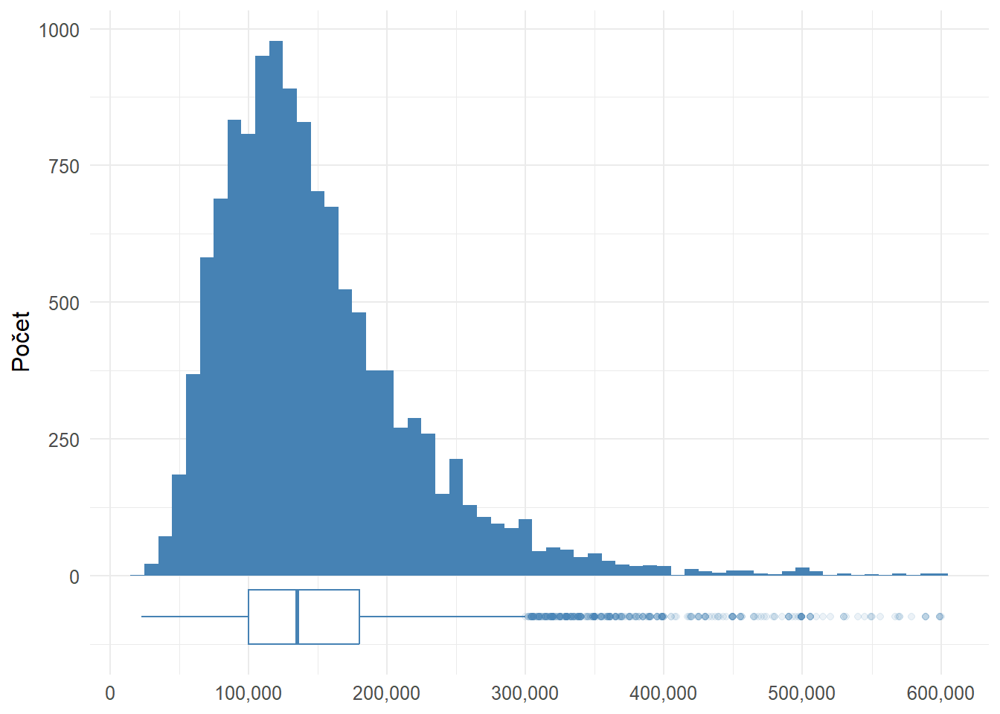
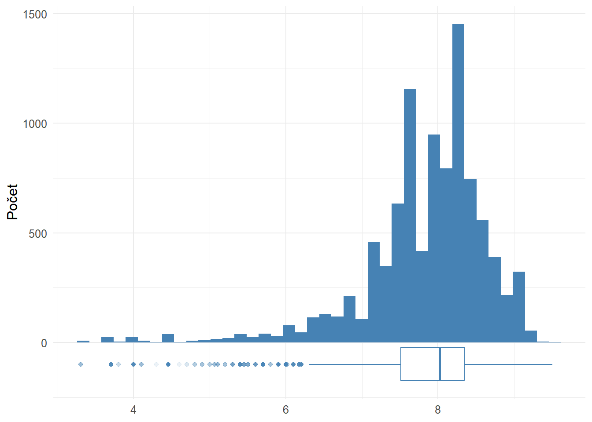
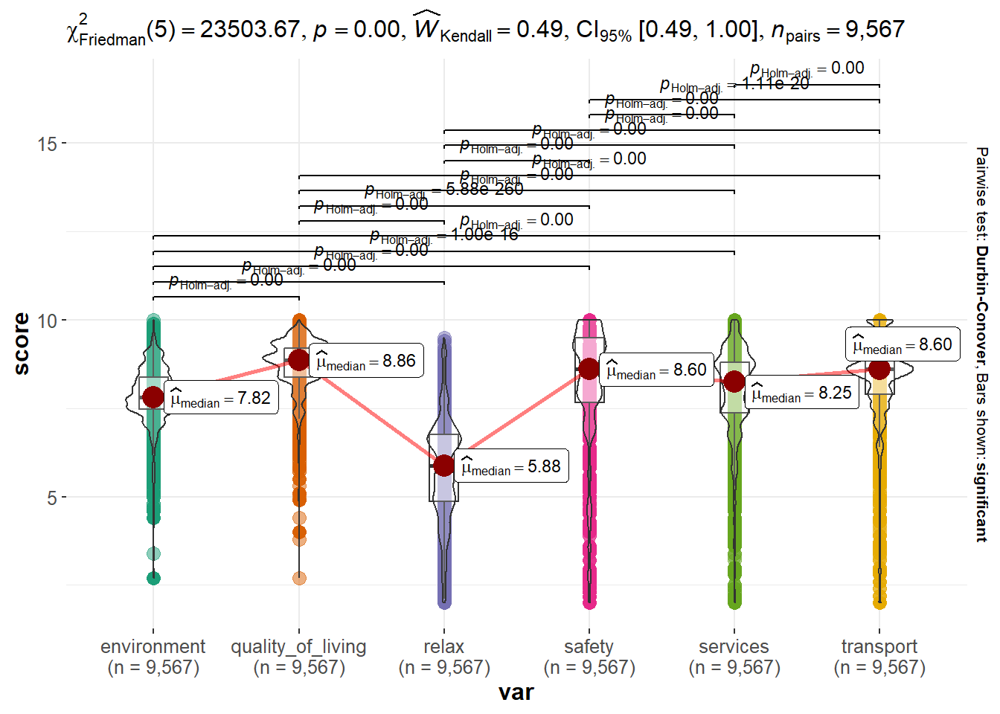
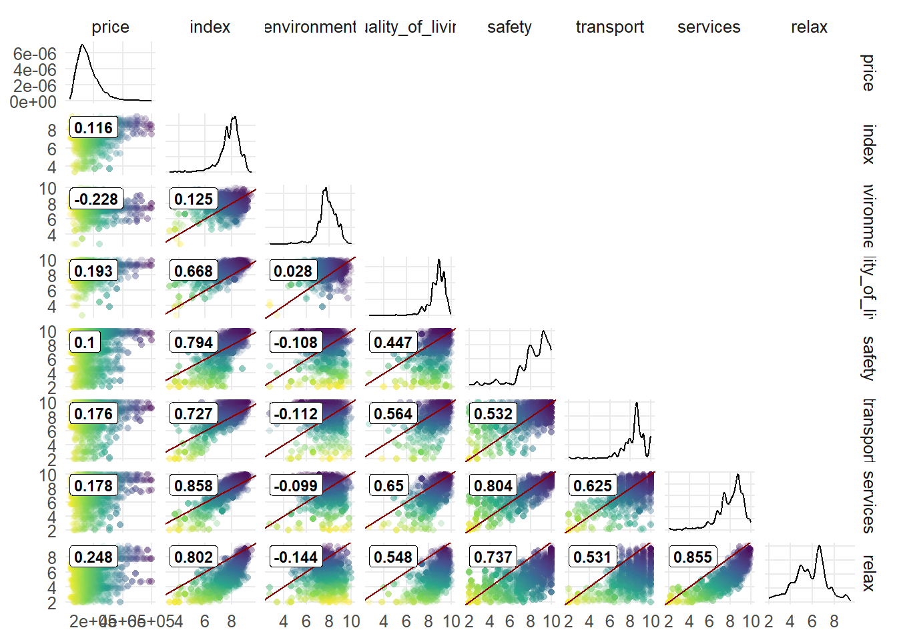
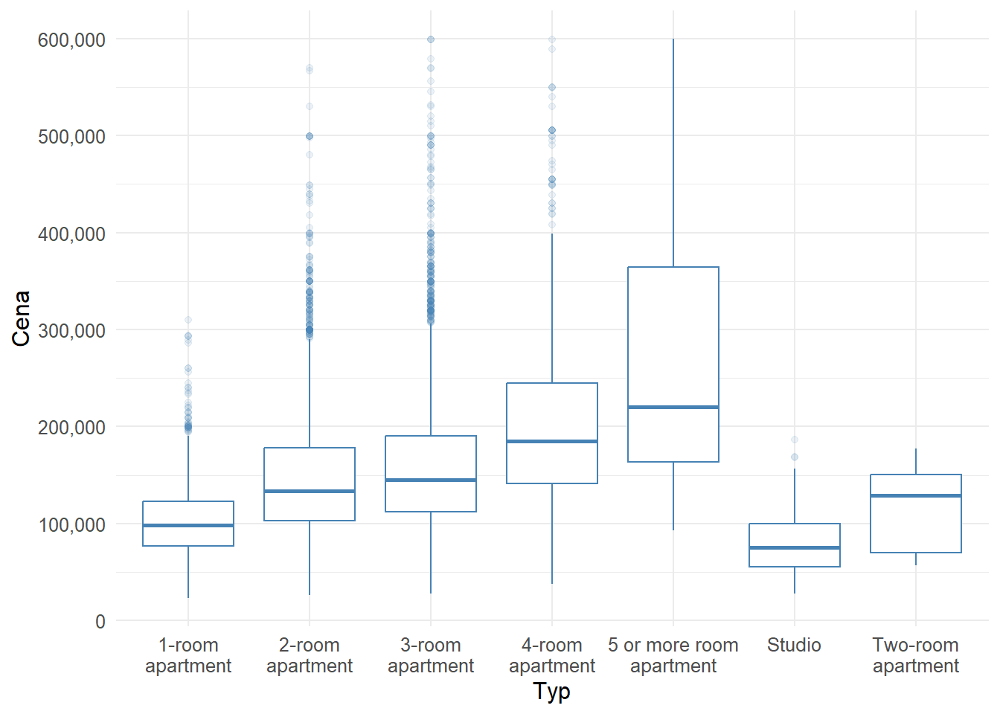
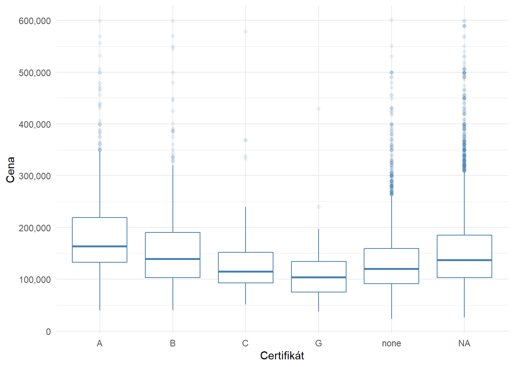
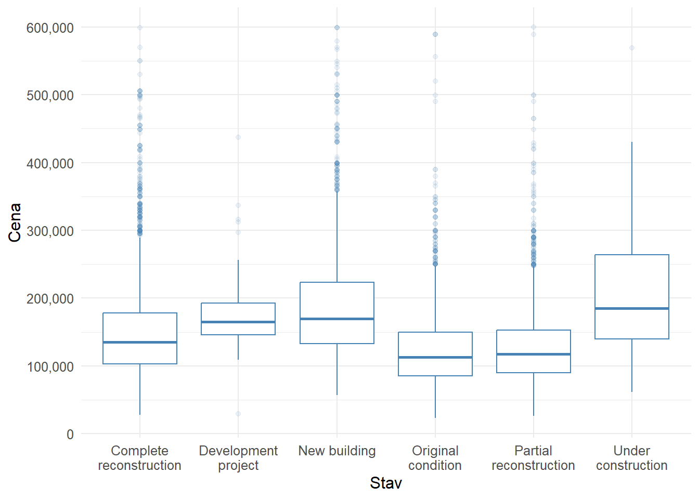
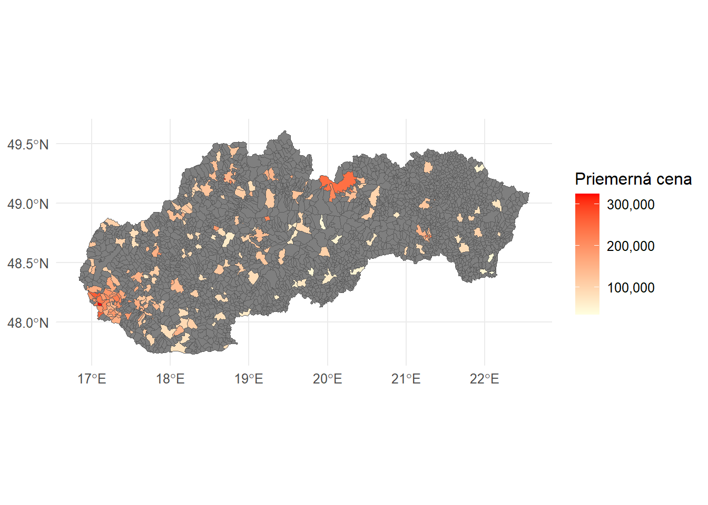

V tomto blogu sa budem venovať Exploratory Data Analysis (EDA) čiže úvodnej analýze údajov, ktorej cieľom je zistiť aká je kvalita, obsah a štruktúra údajov. V tomto prípade ide o dáta z inzercií nehnuteľností. Dáta sú scrape-nuté z webu Nehnutelnosti. Podrobnejšie som prešiel procesom webscraping-u v mojom predchádzajúcom blogovom príspevku.
Čo je EDA
Exploratory Data Analysis je neoddeliteľnou súčasťou dátovej analytiky (Data analysis)/dátovej vedy (Data science).
EDA v data science projekte. Zdroj: https://commons.wikimedia.org/wiki/File:Data_visualization_process_v1.png
Účelom EDA je zhrnúť hlavné charakteristiky súboru údajov (ako kvalita, obsah a štruktúra), objaviť vzorce a vzťahy medzi premennými a identifikovať trendy. Malo by nás to viesť k pochopeniu údajov a identifikácii kritických premenných vzhľadom na naše ciele. Ako je znázornené na obrázku, ide o iteratívny proces. Na základe vašich zistení môžete buď pokračovať v modelovaní/testovaní hypotéz a reportovaní, alebo sa vrátiť k čisteniu/spracovaniu údajov. EDA zvyčajne začína načítaním údajov a kontrolou niekoľkých riadkov, aby ste získali prvotný “pocit” z údajov spolu s kontrolou štruktúry údajov, veľkosti vzorky, typov údajov, chýbajúcich hodnôt atď. Potom pokračujeme podrobnejšou analýzou čo nám pomáha pochopiť vzťahy a identifikovať odľahlé hodnoty a dôležité premenné. V EDA používame rôzne techniky a nástroje. Vo všeobecnosti ich možno rozdeliť do niekoľkých skupín:
Vizualizácia dát - histogram, boxplot, Paretov graf, bodové grafy, korelačná matica, čiarové grafy (pre časové rady), heatmapy atď.
Bi-/viacpremenné štatistiky - korelácia, t-test, chí-kvadrát test, ANOVA, Kruskal-Wallisov test atď.
Na základe zistení vytvoríme záver a buď pokračujeme v projekte, alebo sa vrátime k dodatočnému upratovaniu dát. Je to teda iteratívny proces. Aj keď radšej robím EDA manuálne, existuje niekoľko R knižníc pre automatizované EDA. Sú užitočné pri prvotnom skúmaní údajov a identifikácii napr. dátových typov, premenných s veľkou časťou chýbajúcich hodnôt a iných “high-level” charakteristík. Sú to napríklad:
DataExplorer
ExPanDaR
dataMaid
dlookr
Úvodné čistenie dát
Začíname klasicky, načítaním knižníc pomocou funkcie p_load z knižnice pacman.
Nasleduje prvotné čistenie dát. V nasledujúcom kóde spájam 3 rôzne súbory. Keďže sú z rôznych zdrojov, je potrebné niektoré hodnoty upraviť do rovnakého tvaru (prípar názvov obcí). Následne upravujem premenné do správnych typov, odfiltrujem preč záznamy, ktorých hodnoty sú odľahlé alebo úplne chýbajú a nemá zmysel ich imputovať. Nie nevyhnutný je krok preloženia slovenských výrazov do angličtiny. Robím ho jednak z dôvodu, že som zvyknutý pracovať s anglickými výrazmi pri kódovaní a chcem aby aj dataset bol v tomto ohľade konzistentný. Druhým dôvodom je, že budem dataset nahrávať na Kaggle. V poslednom kroku robím dve verzie datasetu. Jedna obsahuje premennú ‘geometry’ typu sfc_MULTIPOLYGON, ktorá robí problém alebo extrémne spomaluje výpočty niektorých sumačných funkciách ak sú aplikované na celý dataset. Preto na všetku EDA budem používať verziu bez nej.
Feature engineering
# Load advertisements data from RDS fileadvertisements <-readRDS("data/advertisements.RDS")# Clean and restructure advertisements dataadvertisements <- advertisements %>%separate(type_of_real_estate, c("type", "area"), sep =" • ", remove =TRUE) %>%select(link, type)# Load and process districts mapping data from Excel filedistricts_mapping <- openxlsx::read.xlsx("data/obce_okresy.xlsx") %>%mutate(municipality =str_replace(municipality, "Košice - ", "Košice - mestská časť "),municipality =str_replace(municipality, "Bratislava - ", "Bratislava - mestská časť ") )# Load and process scraped data with geocodingscraped_data <-readRDS("data/advertisements_complete_geocoded.RDS") %>%filter(!is.na(link)) %>%select(-c(address1, address2, info_text, district, municipality, address)) %>%rename(quality_of_living = quanlity_of_living) %>%mutate(NAME_NSI =str_replace(NAME_NSI, "Hodruša-Hámre", "Hodruša - Hámre"),NAME_NSI =str_replace(NAME_NSI, "Perín-Chym", "Perín - Chym"),NAME_NSI =str_replace(NAME_NSI, "Šaštín-Stráže", "Šaštín - Stráže"),NAME_NSI =str_replace(NAME_NSI, "Kostolná-Záriečie", "Kostolná - Záriečie") )# Join advertisements and scraped datajoined_data <- scraped_data %>%left_join(advertisements, by ="link", multiple ="first", keep =FALSE) %>%clean_names() %>%filter(!is.na(price)) %>%mutate(# Convert relevant columns to numeric formatpocet_izieb_miestnosti =as.numeric(pocet_izieb_miestnosti),uzit_plocha =str_replace(str_replace(uzit_plocha, ",", "."), " m2", ""),energie =str_replace(str_replace(energie, ",", "."), " €/mesiac", ""),provizia_zahrnuta_v_cene =str_replace_na(provizia_zahrnuta_v_cene, "Nie"),# Create a 'rooms' column based on 'type' and handle missing valuesrooms =case_when(type =="1 izbový byt"~1, type =="2 izbový byt"~2, type =="3 izbový byt"~3, type =="4 izbový byt"~4, type =="5 a viac izbový byt"~5, type =="Garsónka"~1, type =="Dvojgarsónka"~2,.default =NA ),pocet_izieb_miestnosti =coalesce(pocet_izieb_miestnosti, rooms, pocet_izieb_miestnosti) ) %>%mutate_at(c("index_of_living","uzit_plocha","energie","pocet_nadzemnych_podlazi","podlazie","pocet_izieb_miestnosti","rok_vystavby","rok_poslednej_rekonstrukcie","pocet_balkonov","pocet_lodzii" ), as.numeric) %>%select(-link) %>%filter(pocet_izieb_miestnosti <10&!is.na(pocet_izieb_miestnosti)) %>%mutate(type =coalesce(type, case_when( pocet_izieb_miestnosti ==1~"1 izbový byt", pocet_izieb_miestnosti ==2~"2 izbový byt", pocet_izieb_miestnosti ==3~"3 izbový byt", pocet_izieb_miestnosti ==4~"4 izbový byt", pocet_izieb_miestnosti >=5~"5 a viac izbový byt" )) ) %>%select(-rooms) %>%filter(!(type %in%c("Apartmán", "Mezonet", "Iný byt", "Loft"))) %>%rename(index = index_of_living,condition = stav,area = uzit_plocha,provision = provizia_zahrnuta_v_cene,certificate = energeticky_certifikat,energy_costs = energie,construction_type = typ_konstrukcie,year_built = rok_vystavby,last_reconstruction = rok_poslednej_rekonstrukcie,total_floors = pocet_nadzemnych_podlazi,floor = podlazie,lift = vytah,balkonies = pocet_balkonov,loggia = pocet_lodzii,cellar = pivnica,orientation = orientacia ) %>%mutate(# Recreate 'rooms' column after filtering and handle missing valuesrooms =as.numeric(case_when( type =="1 izbový byt"~1, type =="2 izbový byt"~2, type =="3 izbový byt"~3, type =="4 izbový byt"~4, type =="5 a viac izbový byt"~5, type =="Garsónka"~1, type =="Dvojgarsónka"~2,.default =NA )),# Transform 'provision' to binaryprovision =as.numeric(case_when( provision =="Áno"~1, provision =="Nie"~0,.default =NA )),# Transform 'lift' to binarylift =as.numeric(case_when( lift =="Áno"~1,.default =0 )),# Transform 'cellar' to binarycellar =as.numeric(case_when( cellar =="Áno"~1,.default =0 )),certificate =if_else(certificate =="nemá", "none", certificate) ) %>%select(-pocet_izieb_miestnosti) %>%mutate(# Convert relevant columns to numeric formatacross(c("environment", "safety", "transport", "relax", "quality_of_living", "services" ), na_if, "0"),across(c("environment", "safety", "transport", "relax", "quality_of_living", "services" ), as.numeric) )# Translating Slovak terms into English# Define mapping vectorsoriginal_conditions <-c("Pôvodný stav", "Čiastočná rekonštrukcia", "Kompletná rekonštrukcia","Novostavba", "Vo výstavbe", "Developerský projekt")english_conditions <-c("Original condition", "Partial reconstruction", "Complete reconstruction","New building", "Under construction", "Development project")original_construction_type <-c("Tehlová", "Panelová", "Iná", "Kvádrová", "Zmiešaná", "Panelová, Tehlová", "Skeletová", "Tehlová, Železobetónová", "Kamenná", "Montovaná", "Drevená")english_construction_type <-c("Brick", "Panel", "Other", "Cube", "Mixed", "Panel, Brick", "Skeletal", "Brick, Reinforced concrete", "Stone", "Mounted", "Wooden")original_orientation <-c("Juhozápadná", "Južná", "Západná", "Východná", "Juhovýchodná", "Severovýchodná", "Severozápadná", "Severná")english_orientation <-c("Southwest", "South", "West", "East", "Southeast", "Northeast", "Northwest", "North")original_type <-c("3 izbový byt", "1 izbový byt", "2 izbový byt", "4 izbový byt", "Garsónka", "5 a viac izbový byt", "Dvojgarsónka")english_type <-c("3-room apartment", "1-room apartment", "2-room apartment", "4-room apartment", "Studio", "5 or more room apartment", "Two-room apartment")# Translate valuesjoined_data <- joined_data %>%mutate(condition =recode(condition, !!!setNames(english_conditions, original_conditions)),construction_type =recode(construction_type, !!!setNames(english_construction_type, original_construction_type)),orientation =recode(orientation, !!!setNames(english_orientation, original_orientation)),type =recode(type, !!!setNames(english_type, original_type)) )# Join with districts mapping datajoined_data <- joined_data %>%left_join(districts_mapping, join_by(name_nsi == municipality), keep =FALSE, multiple ="first")# Create a copy of joined data without geometry informationjoined_data_wo_geom <- joined_datajoined_data_wo_geom$geometry <-NULLwrite.csv2(joined_data_wo_geom, "data/apartments_appraisal.csv", row.names = F)
Prvý krok v EDA je pozrieť sa na dáta ako celok. V jazyku R môžeme použiť napr. základnú funkciu summary(). Ja osobne používam rád funkciu skim() z knižnice skimr. Obe poskytujú zhrnutie a deskriptívne štatistiky premenných. Funkcia skim() je však podrobnejšia a vracia aj údaje o type premennej, formátovaní kompletnosti atď.
Náš dataset pozostáva z 27 premenných. 10 je kategorických (kvalitatívnych) a 17 kvantitatívnych. Z tabuliek je hneď vidieť prvý problém, ktorý bude nutné vyriešiť - chýbajúce dáta. Tu sa ponúka niekoľko možností ako sa k tomuto problému postaviť:
Odstránenie riadkov alebo stĺpcov s chýbajúcimi hodnotami: Táto metóda je vhodná, ak počet chýbajúcich hodnôt je malý v porovnaní s celkovým počtom hodnôt v dátovom sete. Avšak táto metóda môže viesť k strate informácií a môže ovplyvniť výsledky analýzy.
Imputácia hodnôt: Táto metóda spočíva v nahradení chýbajúcich hodnôt inými hodnotami. Existuje niekoľko spôsobov, ako to dosiahnuť, ako napríklad nahradenie chýbajúcich hodnôt priemerom, mediánom, modusom alebo inými štatistickými metódami. Táto metóda môže byť vhodná, ak počet chýbajúcich hodnôt je relatívne malý a poznáme vlastnosti premennej (napr. rozloženie má veľký vplyv na hodnotu priemeru. Ak premenná obsahuje odľahlé hodnotz, medián je lepšou voľbou). Výhodou týchto metód je rýchlosť aplikovania.
Použitie modelov strojového učenia: Táto metóda spočíva v použití modelov strojového učenia (napr. KNN, LM, Random Forest) na predpovedanie chýbajúcich hodnôt. Táto metóda môže byť vhodná, ak počet chýbajúcich hodnôt je vysoký a ak existuje dostatočné množstvo dát na trénovanie modelu. Ich použitie je tiež vhodné ak predpokladáme komplexné vzťahy medzi premennými a máme niekoľko prediktorov s výrazným vplyvom na premennú s chýbajúcimi hodnotami. Tiež je vhodné zvážit tieto metódy v prípade nelineárnych vzťahov medzi premennými.
Ponechanie chýbajúcich hodnôt: Ponechanie chýbajúcich hodnôt a pristupovanie k nim ako ku špecifickej situácii je tiež možnosťou.
Druhým problémom, ktorý treba bežne riešiť, je prítomnosť odľahlých hodnôt (outliers). Opäť máme niekoľko možných riešení.
Odstránenie riadkov alebo stĺpcov s odľahlými hodnotami: Keďže počet odľahlých hodnôt je malý (sú to extrémne hodnoty), táto metóda je schodnejšia než bola pri výskyte chýbajúcich hodnôt, ktorých počet je vysoký.
Nahradenie odľahlých hodnôt: Na výber máme z viacerých možností. Priemer, medián, použitie KNN imputácie.
Transformácia: Existuje množstvo metód transformácie dát, ktoré môžeme použit. Veľmi často sa používa logaritmická transformácia, v prípade ktorej aplikujeme logaritmus (najčastejšie prirodzený) na každú hodnotu vo vektore. Ďalšou možnosťou je štandardizácia (z-skóre) ak naše dáta spĺňajú predpoklady pre túto metódu. Použiť môžeme aj winsorizáciu, ktorá sa používa na nahradenie odľahlých hodnôt s hodnotami, ktoré sú bližšie k ostatným hodnotám v datasete (capping/trimming). Môžeme použiť štandardnú winsorizáciu alebo winsorizáciu na základe percentilov. Binning je posledná metóda, ktorú uvediem. Je zaujímavá, lebo jej výsledkom nemusí byť nevyhnutne číselná hodnota, ale kategorická premenná. Pôvodná hodnota sa nahradí intervalom (bin), do ktorého spadá (napr. osoba vo veku 32 rokov spadá do kategórie 30-34). Môže sa však nahradiť aj strednou hodnotou v rámci tohto binu (napr. priemerom 33,2 alebo mediánom 32,9).
Chýbajúce hodnoty
Ako prvé sa zbavíme stĺpcov, ktoré majú veľmi vysoký počet chýbajúcich záznamov a ich imputácia by mohla skresliť výsledky a spôsobiť nepresnosti v analýze.
Následne môžeme vyriešiť tie prípady, kde imputácia dáva zmysel. Je to napríklad stĺpec index a jeho šesť kategórií: environment, quality_of_living, safety, transport, services a relax. Index môže mať hodnotu od 0 do 10 a pripravuje ho slovenský startup City Performer. Tento údaj nie je k dispozícii pre všetky inzeráty. Môžeme však zoskupiť záznamy podľa obce a chýbajúce hodnoty doplniť priemerom.
Imputácia dát
joined_data_cleaned_wo_geom <- joined_data_cleanedjoined_data_cleaned_wo_geom$geometry <-NULL# price where we have indexmun_ind_price <- joined_data_cleaned_wo_geom %>%filter(!is.na(index)) %>%group_by(name_nsi) %>%summarize(price_with_before =mean(price, na.rm =TRUE)) %>%summary() %>%as.data.frame() %>%filter(str_trim(Var2) !="name_nsi") %>%separate(col = Freq, sep =":", c("measure", "value")) %>%mutate(value =as.numeric(str_squish(value))) %>%select(Measure = measure,`Price with index before`= value )# price where we don't have indexmun_no_ind_price <- joined_data_cleaned_wo_geom %>%filter(is.na(index)) %>%group_by(name_nsi) %>%summarize(price_without_before =mean(price, na.rm =TRUE)) %>%summary() %>%as.data.frame() %>%filter(str_trim(Var2) !="name_nsi") %>%separate(col = Freq, sep =":", c("measure", "value")) %>%mutate(value =as.numeric(str_squish(value))) %>%select(`Price without index before`= value)# imputation on municipality leveljoined_data_cleaned <- joined_data_cleaned %>%group_by(name_nsi) %>%mutate(index2 =mean(index, na.rm =TRUE),environment2 =mean(environment, na.rm =TRUE),quality_of_living2 =mean(quality_of_living, na.rm =TRUE),safety2 =mean(safety, na.rm =TRUE),transport2 =mean(transport, na.rm =TRUE),services2 =mean(services, na.rm =TRUE),relax2 =mean(relax, na.rm =TRUE),price_after =mean(price, na.rm =TRUE) ) %>%ungroup()joined_data_cleaned_wo_geom <- joined_data_cleanedjoined_data_cleaned_wo_geom$geometry <-NULL# price where we have index after imputationmun_imputed_ind_price <- joined_data_cleaned_wo_geom %>%filter(!is.na(index2)) %>%group_by(name_nsi) %>%summarize(price_with_after =mean(price_after, na.rm =TRUE)) %>%summary() %>%as.data.frame() %>%filter(str_trim(Var2) !="name_nsi") %>%separate(col = Freq, sep =":", c("measure", "value")) %>%mutate(value =as.numeric(str_squish(value))) %>%select(`Price with index after`= value)# price where we don't have index after imputationmun_imputed_no_ind_price <- joined_data_cleaned_wo_geom %>%filter(is.na(index2)) %>%group_by(name_nsi) %>%summarize(price_with_after =mean(price_after, na.rm =TRUE)) %>%summary() %>%as.data.frame() %>%filter(str_trim(Var2) !="name_nsi") %>%separate(col = Freq, sep =":", c("measure", "value")) %>%mutate(value =as.numeric(str_squish(value))) %>%select(`Price without index after`= value)comparison_mun_ind <-cbind(mun_ind_price, mun_imputed_ind_price, mun_no_ind_price, mun_imputed_no_ind_price)joined_data_cleaned <- joined_data_cleaned %>%mutate(index =coalesce(index, index2),environment =coalesce(environment, environment2),quality_of_living =coalesce(quality_of_living, quality_of_living2),safety =coalesce(safety, safety2),transport =coalesce(transport, transport2),services =coalesce(services, services2),relax =coalesce(relax, relax2) ) %>%select(-c( index2, environment2, quality_of_living2, safety2, transport2, services2, relax2, price_after ))comparison_mun_ind %>%kable(format ="html", format.args =list(big.mark =" ")) %>%kable_styling(bootstrap_options =c("striped", "hover"),full_width = F,font_size =12,position ="left" )
Measure
Price with index before
Price with index after
Price without index before
Price without index after
Min.
23 000
23 000
19 200
19 200
1st Qu.
113 792
111 288
78 130
72 995
Median
153 976
145 008
105 813
99 987
Mean
159 949
154 151
117 100
106 715
3rd Qu.
193 002
187 453
141 992
130 131
Max.
425 664
416 350
888 888
888 888
Ako vidíme, po imputácii sa distribúcia ceny nehnuteľnosti (ako premennej, pre ktorú budeme vytvárať predikčný model) zásadne nezmenila.
Odľahlé hodnoty
Podobne ako pri indexe, odľahlé hodnoty cien nehnuteľností odstraňujeme v kontexte obcí. Dáta agregujeme podľa názvu obce a pokiaľ niektorý záznam presahuje hodnotu mediánu +- 1,5 násobok medzikvartilového rozpätia, tak záznam odstránime.
Niekedy je potrebné ešte zvážiť jednotlivé prípady. Napr. po predchádzajúcom odfiltrovaní niektorých záznamov ostal v datasete záznam s cenou 888 888, celkom určite to nie je skutočná cena a tento riadok zmažeme tiež.
Rozloha tiež obsahuje záznamy, ktoré bude lepšie odstrániť. Keď sa pozrieme na hodnoty prvých a posledných piatich promile, je jasné, že odstraňovať budeme len veľmi malé množstvo záznamov.
Nasleduje posledné dočistenie dát pred tým, než budeme pokračovať v detailnejšej EDA. V tomto kroku odstraňujeme záznamy z obcí, ktoré majú menej ako 5 inzerátov. Namiesto 5 by sme mohli vzbrať aj iné číslo, ale existuje “rule of thumb”, ktoré tvrdí, že je 93,75% šanca, že medián populácie is medzi najnižšou a najvyššou hodnotou náhodne vybranej vzorky.
Po týchto pár zmenách je stav viditeľne lepší. Ostáva nám niekoľko premenných, ktoré obsahujú chýbajúce záznamy. O tie sa postaráme neskôr pri príprave ML modelu.
Cena je hlavná premenná, ktorá nás zaujíma a ktorú budeme neskôr predikovať pomocou natrénovaného ML modelu.

Rozloženie cien nehnuteľností
Rozloženie hodnôt je asymetrické s pozitívnym (pravostranným) zošikmením. Toto sa dalo očakávať vzľadom na to, že drahé nehnuteľnosti sa nachádzajú v ponuke menej často. V prípade potreby môžeme využiť logaritmickú transformáciu aby sme získali normálne rozdelenie.
Index udáva agregované hodnotenie šiestich rôznych charakteristík miesta, kde sa nehnuteľnosť nachádza.
2887 inzerátov ( 23.1 % zo všetkých) nemá ani po imputácii dostupný tento údaj.

Rozloženie indexu bývania
Na rozdiel od cien, index bývania má negatívne zošikmenie. Priemerná hodnota je 7.8 bodu a medián 8 bodu. Medzi inzerátmi však nájdeme aj hodnoty nižšie ako 4 body. Jednotlivé kategórie, ktoré sa podieľajú na výslednom indexe majú niekoľko spoločných vlasností. Všetky majú medián aj priemer v hornej polovici možných bodov. Je to do istej miery očakávateľné, keďže hodnotenie je zrejme zamerané najmä na mestá a väčšie obce. Je tam jednak dostatok ponúk na trhu s nehnuteľnosťami aby sa vôbec oplatilo venovať mu pozornosť a vzhľadom na veľkú ponuku, a teda pravdepodobne aj dopyt, bude občianska vybavenosť aspoň na uspokojivej úrovni. Zo šiestich kategórií sa mierne odchyľuje “životné prostredie” a celkom evidentne “relax”, pri ktorom ani jedna lokalita nedosiahla maximálny počet bodov.
Category
Min
1st Qu.
Median
Mean
3rd Qu.
Max
environment
2.7
7.5
7.8
7.9
8.4
10.0
quality_of_living
2.7
8.4
8.9
8.7
9.2
10.0
safety
2.0
7.7
8.6
8.2
9.5
10.0
transport
2.0
7.9
8.6
8.4
8.9
10.0
services
2.0
7.4
8.3
8.0
8.8
10.0
relax
2.0
4.9
5.9
5.8
6.7
9.5

Porovnanie komponentov indexu bývania
Napriek podobnostiam medzi kategóriami, rozdiely ich hodnôt sú štatisticky významne odlišné (p hodnota < 0.01) a táto odlišnosť je mierna (moderate agreement). Durbinov test párového porovnania ukazuje, že všetky kategórie sú navzájom odlišné (podľa Holm adjustovaných p hodnôt).

Korelácia komponentov indexu bývania
Pri pohľade na koreláciu indexu a jeho komponentov s cenou je zaujímavé, že samotný index má nižšiu koreláciu s cenou ako väčšina jednotlivých komponentov. Ak sa pozrieme na tie, tak negatívny vzťah vidíme len pri životnom prostredí, čo do veľkej miery dáva zmysel. Naopak najvyšší pozitívny vzťah s cenou majú relax, služby a transport.
Rozloha bude zrejme jednou z najpodstatnejších premenných pri predikovaní ceny nehnuteľnosti. Tiež bude úzko súvisieť s typom nehnuteľnosti - viac izieb zväčša znamená väčšiu plochu (ale nie vždy, ako ukazuje histogram).
Rozloženie rozlohy nehnuteľností
Podobne ako pri cene, aj teraz môžeme vidieť rozloženie hodnôt s pozitívnym (pravostranným) zošikmením. Dôvodom je podobne ako pri drahých nehnuteľnostiach, že ponuka bytov s veľkou plochou je malá a preto je ich výskyt ojedinelý (hoci nemusí platiť, že drahý byt má nevyhnutne aj veľkú plochu).
V datasete máme 7 typov nehnuteľností:
1 izbový byt
2 izbový byt
3 izbový byt
4 izbový byt
5+ izbový byt
Garsónka (“studio apartment”)
Dvojgarsónka (“one-bedroom apartment”)
Paretov graf podľa typu nehnuteľnosti
Najčastejší typ je 3 izbový byt a v tesnom závese 2 izbový byt. Tretie sú 1 izbové byty avšak v porovnaní s prvými dvoma kategóriami vidíme výrazný prepad v ich počte.

Cena nehnuteľností podľa typu
2 a 3 izbové byty majú veľmi podobné ceny. 3 izby sú samozrejme drahšie, ale rozdiel (najmä keď vezmeme do úvahy zvýšenie ceny z 1 izbových bytov na 2 izbové a z 3 izbových na 4 izbové) je mierny.
Characteristic
1-room apartment, N = 1,565
2-room apartment, N = 4,605
3-room apartment, N = 4,960
4-room apartment, N = 921
5 or more room apartment, N = 55
Studio, N = 322
Two-room apartment, N = 60
p-value1
price, Median (IQR)
97,900 (76,900 – 123,000)
133,900 (103,000 – 178,000)
145,000 (112,000 – 189,999)
185,000 (140,990 – 244,900)
220,000 (163,500 – 364,000)
75,300 (55,000 – 99,960)
128,750 (69,675 – 150,743)
<0.001
area, Median (IQR)
37 (33 – 40)
55 (50 – 62)
72 (66 – 78)
85 (80 – 96)
108 (95 – 148)
24 (20 – 28)
43 (40 – 48)
<0.001
1 Kruskal-Wallis rank sum test
Kruskal-Wallis rank sum test potvrdzuje, že existujú rozdiely v cenách a rozlohe medzi jednotlivými typmi bytov, ktoré nie sú náhodné.
Energetický certifikát budovy (ECB) je právny dokument, ktorý hodnotí budovy z hľadiska energetickej efektívnosti a emisií oxidu uhličitého, čo vedie k ich klasifikácii v energetických stupniciach z najúčinnejšej triedy A po nehospodárnu triedu G. Energetický certifikát hodnotí budovy z hľadiska štyroch bodov spotreby energie:
Tepelná ochrana budov
Energetické požiadavky na zahrievanie a prípravu horúcej vody
Energetická potreba klimatizácie, klimatizácia
Energetická potreba na osvetlenia
Na základe týchto spotrebných bodov ECB prepočítava požadované množstvo energie v kWh / m² ročne pre celú budovu pre celú budovu.
Paretov graf podľa typu certifikátu
57% inzerovaných bytov nemá uvedený energetický certifikát. Skoro 25% má explicitne uvedené, že takýto certifikát nemá. Najhoršie certifikáty D až F sú zastúpené veľmi málo.

Cena nehnuteľností podľa certifikátu
Box-plot graf pekne ilustruje vzťah medzi úrovňou certifikátu a cenou. S klesajúcou úrovňou certifikátu klesá aj cena. Z grafu je tiež vidno, že ak certifikát chýba (nie je uvedený), nemôžeme automaticky uvažovať, že ho inzerovaný byt nemá. Preto aj tieto hodnoty budú imputované pri príprave ML modelu.
Characteristic
A, N = 1,115
B, N = 884
C, N = 141
D, N = 20
E, N = 7
F, N = 2
G, N = 63
none, N = 3,150
p-value1
price, Median (IQR)
163,500 (132,498 – 218,667)
138,950 (103,000 – 189,923)
114,900 (92,990 – 152,000)
88,400 (57,500 – 142,993)
96,000 (66,000 – 130,995)
107,900 (107,350 – 108,450)
103,500 (74,995 – 134,235)
120,000 (91,000 – 159,375)
<0.001
1 Kruskal-Wallis rank sum test
Kruskal-Wallis rank sum test potvrdzuje, že existuje rozdiel v cenách medzi jednotlivými certifikátmi, ktorý nie je náhodný.
Paretov graf podľa typu stavu
Najbežnejší stav ponúkaných nehnuteľností sú Kompletná rekonštrukcia, Čiastočná rekonštrukcia a Novostavba. Nasleduje výraznejší prepad na štvrté miesto, kde sa nachádzajú byty v pôvodnom stave.

Cena nehnuteľností podľa typu
Medzi jednotlivými stavmi sú zjavné rozdiely v cene. Najvyššie hodnoty sú v troch kategóriách: Vo výstavbe, novostavba a developerský projekt. Nie je veľkým prekvapením, že nové a ešte nedokončené byty sú najdrahšie. Naopak najlacnejšie sú pôvodný stav a čiastočná rekonštrukcia. Uprostred sa nachádzajú byty s kompletnou rekonštrukciou. Všetky stavy majú odľahlé hodnoty vo vyšších cenových rozpätiach, rozloženie je pozitívne zošikmené.
Characteristic
Complete reconstruction, N = 3,773
Development project, N = 54
New building, N = 3,057
Original condition, N = 1,854
Partial reconstruction, N = 3,439
Under construction, N = 308
p-value1
price, Median (IQR)
134,900 (102,950 – 178,000)
164,904 (146,100 – 192,271)
169,900 (132,500 – 222,900)
112,700 (85,000 – 149,990)
117,500 (89,900 – 153,000)
184,950 (139,968 – 263,875)
<0.001
area, Median (IQR)
64 (50 – 73)
59 (43 – 68)
59 (49 – 74)
65 (55 – 75)
64 (52 – 73)
58 (51 – 76)
<0.001
1 Kruskal-Wallis rank sum test
Kruskal-Wallis rank sum test potvrdzuje, že existujú rozdiely v cenách a rozlohe medzi jednotlivými stavmi bytov, ktoré nie sú náhodné. Zaujímavé je, že novšie byty (Novostavba, developerský projekt) majú menšiu plochu ako staršie byty (teda tie, ktoré majú stav úplná alebo čiastočná rekonštrukcia, resp. pôvodný stav)
Regionálne rozdiely na Slovensku majú v mnohých sociokultúrnych aspektoch západo-východný gradient. Najmä južná časť stredného Slovenska patrí medzi najmenej rozvinuté regióny. Preto je rozumné očakávať rovnaký vzorec aj v cenách bytov.
Okresy s najvyššou a najnižšou priemernou cenou bytov
Najdrahšie byty sú zo západného Slovenska s výnimkou okresu Košice I, ktoré je centrom na východe. Na druhej strane 9 z 10 okresov sa nachádza v južnej a vo východnej časti republiky. Tu je potrebné poznamenať, že väčšina týchto okresov má veľmi nízky počet záznamov (inzerátov). To nám môže povedať dve veci:
Nízke ceny môžu byť spôsobené náhodou (čo však zrejme nebude pravda, cena bude odrážať širšie ekonomické súvislosti)
Realitný trh v tejto časti Slovenska je málo rozvinutý.
Na Mape nižšie vidíme zobrazené priemerné ceny v obciach (resp. mestských častiach) s aspoň piatimi inzerovanými bytmi.

Priemerné ceny bytov v obciach
tinytable_f925bcd0ugx5422u28py
price
index
environment
quality_of_living
safety
transport
services
relax
area
provision
rooms
price
1
.
.
.
.
.
.
.
.
.
.
index
.10
1
.
.
.
.
.
.
.
.
.
environment
-.28
-.04
1
.
.
.
.
.
.
.
.
quality_of_living
.22
.65
-.10
1
.
.
.
.
.
.
.
safety
.11
.80
-.24
.45
1
.
.
.
.
.
.
transport
.23
.60
-.28
.56
.42
1
.
.
.
.
.
services
.21
.83
-.25
.64
.83
.51
1
.
.
.
.
relax
.20
.83
-.24
.53
.81
.47
.88
1
.
.
.
area
.47
.01
.00
.01
.01
.01
.00
.02
1
.
.
provision
-.05
.02
.00
.01
.02
.00
.02
.04
-.01
1
.
rooms
.38
.01
-.01
.02
.01
-.01
.01
.01
.84
.00
1
Záver a nasledujúce kroky
EDA nám poskytla cenné poznatky, ktoré budú zohľadnené v predikčnom modeli:
Rozloženie cien je vychýlené doprava - ponuky drahých bytov sú obmedzené
Geopriestorové rozloženie má západ-východný gradient - nižšie ceny sú na východe a juhu, s výnimkou niekoľkých regionálnych centier.
Väčšina miest v našom datasete má pomerne vysokú úroveň indexu bývania. Vo všeobecnosti existuje pozitívny vzťah medzi jeho hodnotou a cenou.
Existujú preukázané rozdiely medzi cenami bytov s rôznymi stavmi. Nie je prekvapujúce, že nové byty majú najvyššie ceny.
Podobný efekt vidíme pri energetickom certifikáte. Počet chýbajúcich údajov je v tomto prípade vzsoký a budeme ho riešiť imputáciou.
Veľká väčšina bytov v súbore má 2 a 3 izby. Cena rastie s rastúcou veľkostnou triedou. Zvýšenie ceny z 2 izbovej na 3 izbovú skupinu je v však priemere dosť nízke. Dva možné dôvody sú - dopyt po 2 izbových bytoch (keďže sú stále lacnejšie ako 3 izbové) a lokalita. Ak by sa väčšina 2-izbových bytov nachádzala na západe, ich cena by bola v priemere za celú krajinu vyššia v porovnaní s rovnomerným priestorovým rozložením.